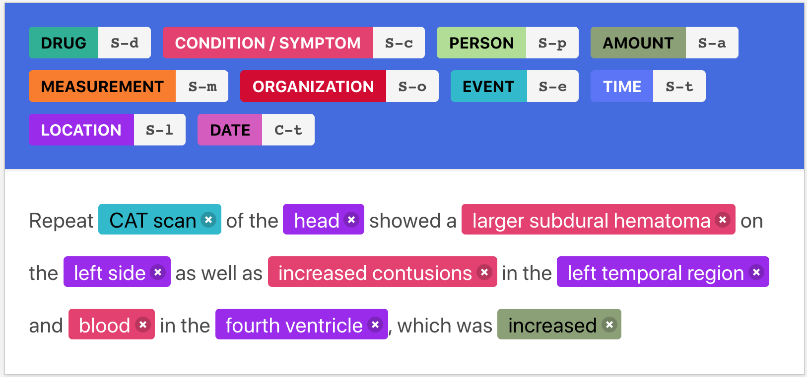

The next step in this project is developing "gold standard" NLP datasets which can be used to train more sophisticated models. The project is currently being done through Doccanno in order to tag 10 different entity types specific to the healthcare field.
The labels and format of the dataset are in the following form:
The demand for such data is high as models trained on non-medical data are useless when trying to identify important medical entities. "Gold Standard" datasets such as this will allow the utility of these models to reach the field of healthcare and make a real impact for professionals and patients.
The annotaton effort is ongoing and relies heavily on public contributions.
If you would like to help contribute to annotations you can reach me at my email:
Specify the header as "Mimic III Annotation" and I will set you up with access to the dataset.